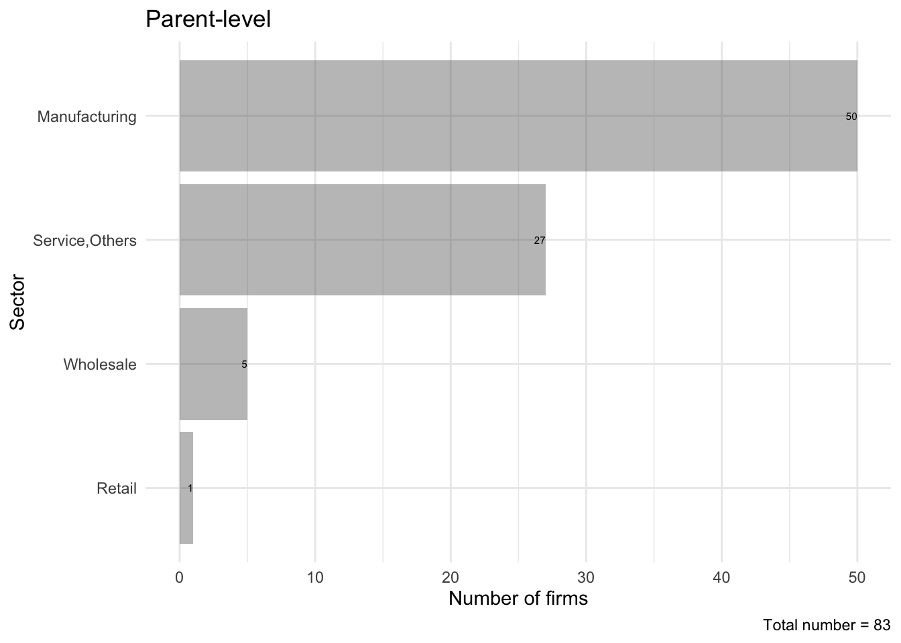
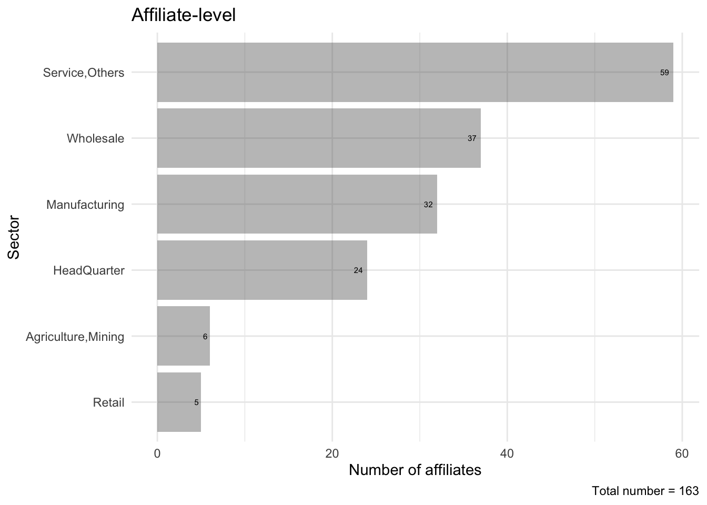
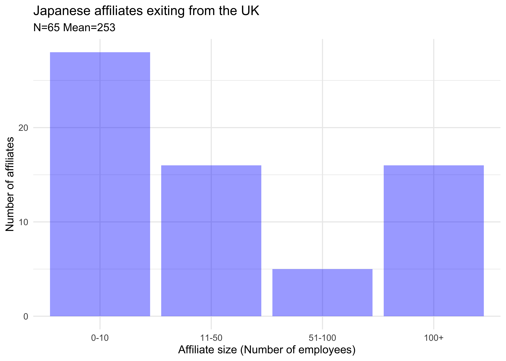

library(rio)
library(dplyr)
library(ggplot2)
library(gridExtra)exit_firm2016_UK <- rio::import("../../03_data_output/parent_exit_uk_after_brexit.dta")
exit_aff2016_UK <- rio::import("../../03_data_output/affiliate_exit_uk_after_brexit.dta")# 親会社レベルの業種別退出件数
exit_firm_UK_sector <- exit_firm2016_UK %>%
group_by(Parent_SectorClassNameAlph) %>%
summarise(N = n(), .groups = "drop") %>%
arrange(desc(N))
exit_firm_UK_sector$rank <- 1:nrow(exit_firm_UK_sector)
n_firm_cap <- paste0("Total number = ", nrow(exit_firm2016_UK))
f1 <- ggplot(exit_firm_UK_sector,
aes(x = reorder(Parent_SectorClassNameAlph, -rank), y = N)) +
geom_bar(stat = "identity", alpha = 0.4) +
geom_text(aes(label = N), hjust = 1.0, size = 2) +
labs(
title = "Parent-level",
caption = n_firm_cap,
x = "Sector",
y = "Number of firms"
) +
theme_minimal() +
coord_flip()
f1
# 現地法人レベルの業種別退出件数
exit_aff_UK_sector <- exit_aff2016_UK %>%
group_by(FA_SectorClassNameAlph) %>%
summarise(N = n(), .groups = "drop") %>%
arrange(desc(N))
exit_aff_UK_sector$rank <- 1:nrow(exit_aff_UK_sector)
n_aff_cap <- paste0("Total number = ", nrow(exit_aff2016_UK))
a1 <- ggplot(exit_aff_UK_sector,
aes(x = reorder(FA_SectorClassNameAlph, -rank), y = N)) +
geom_bar(stat = "identity", alpha = 0.4) +
geom_text(aes(label = N), hjust = 1.5, size = 2) +
labs(
title = "Affiliate-level",
caption = n_aff_cap,
x = "Sector",
y = "Number of affiliates"
) +
theme_minimal() +
coord_flip()
a1
# 親会社と現地法人の業種構成を横に並べて保存する
c1 <- arrangeGrob(a1, f1, nrow = 1)
ggsave("../../04_tex/oa/FigX3.png", c1, width = 10, height = 5, dpi = 300)# 欠損を除き、0人は1人として扱って区分を作る
exit_aff2016_UK2 <- subset(exit_aff2016_UK, !is.na(exit_aff2016_UK$Aff_size))
subtitle <- paste0("N=", nrow(exit_aff2016_UK2), " Mean=", round(mean(exit_aff2016_UK2$Aff_size), 1))
exit_aff2016_UK2$Aff_size <- ifelse(exit_aff2016_UK2$Aff_size == 0, 1, exit_aff2016_UK2$Aff_size)
exit_aff2016_UK2$Aff_size_cat <- cut(
exit_aff2016_UK2$Aff_size,
breaks = c(0, 10, 50, 100, 100000),
labels = c("0-10", "11-50", "51-100", "100+")
)
sizea2 <- ggplot(exit_aff2016_UK2, aes(x = Aff_size_cat)) +
geom_bar(fill = "blue", alpha = 0.4) +
labs(
title = "Japanese affiliates exiting from the UK",
x = "Affiliate size (Number of employees)",
y = "Number of affiliates",
subtitle = subtitle
) +
theme_minimal()
sizea2
ggsave("../../04_tex/oa/FigX1.png", sizea2, dpi = 300)